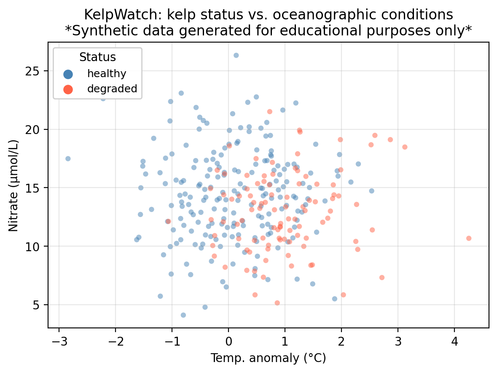
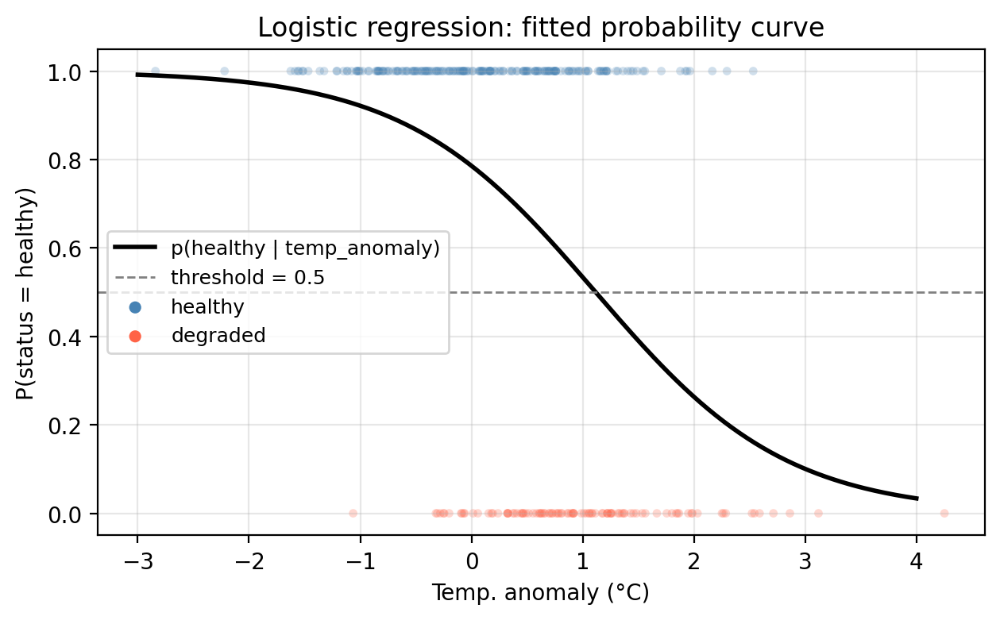
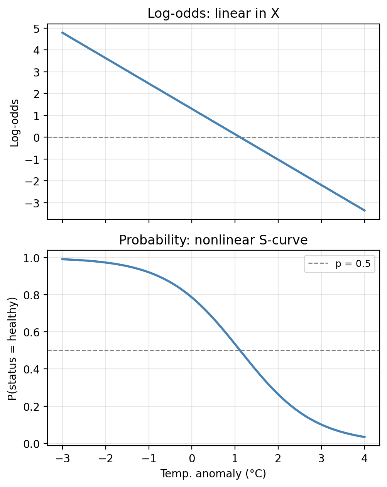
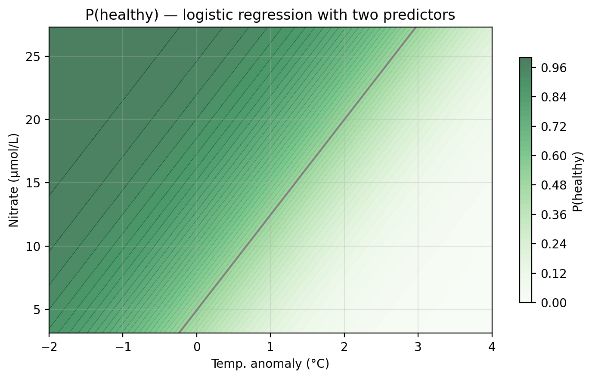
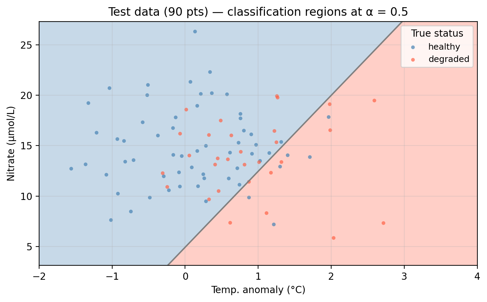
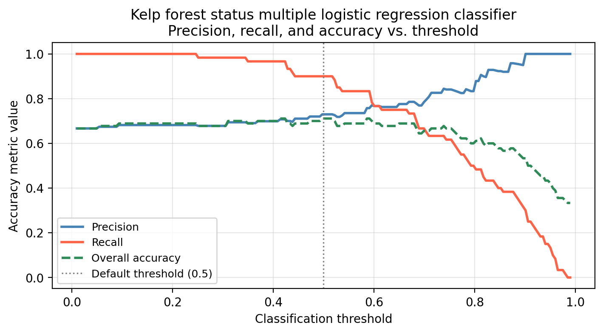
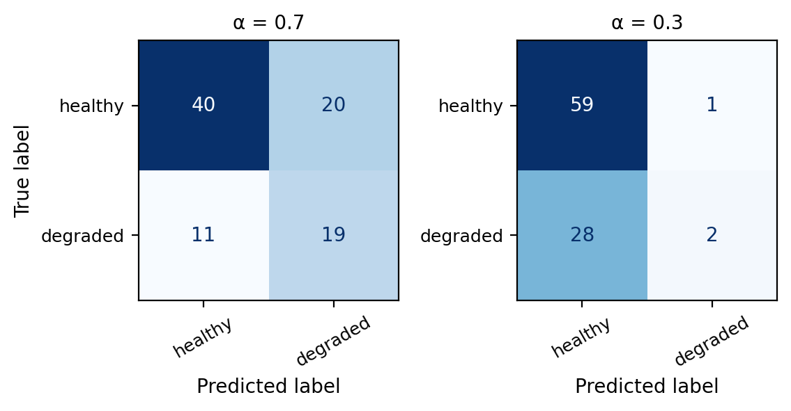
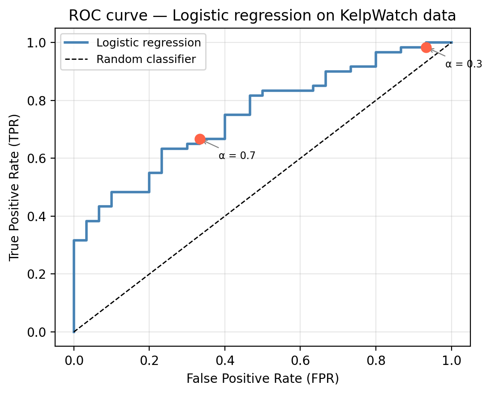
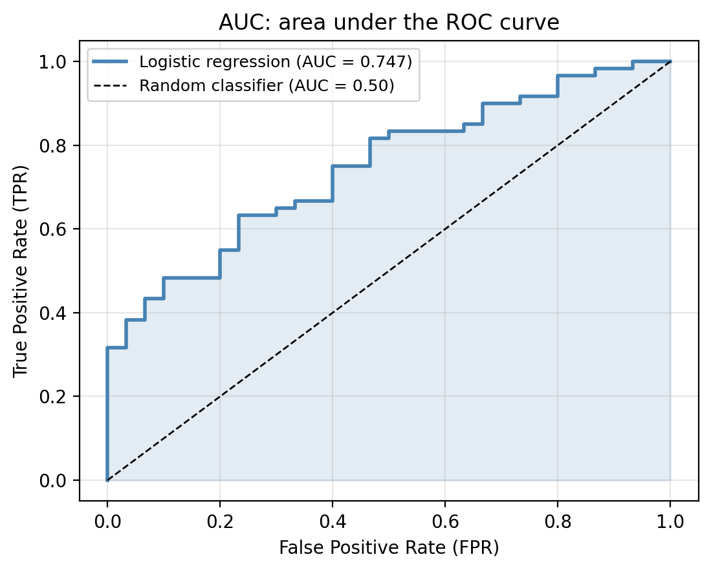

Logistic regression and ROC curves
In this lesson we introduce:
- Logistic regression and how it is used for classification
- Interpreting logistic regression coefficients through log-odds
- Adjusting the classification threshold and its effect on precision and recall
- ROC curves and the AUC as tools for evaluating classifier performance across thresholds
These notes are based on chapter 4 of An Introduction to Statistical Learning with Applications in Python (James et al. 2023). The example data is synthetic and was generated with the aid of Claude Code for the purpose of this lesson.
A guiding example: kelp forest monitoring
In this lesson we use the same example dataset as in our KNN lesson: a synthetic dataset that “tracks” 300 coastal monitoring stations. For each station we record:
temp_anomaly— sea surface temperature anomaly (°C); positive values indicate warmer-than-average conditionsnitrate— nitrate concentration (μmol/L); higher values generally support kelp growthstatus— observed kelp forest condition: healthy or degraded
The central question is: can we predict whether a kelp forest site is healthy or degraded from its oceanographic conditions?
In the previous lesson we introduced classification and used K-Nearest Neighbors to predict kelp forest status in this dataset. In this lesson we study logistic regression for the same task.
Logistic regression
Logistic regression is a parametric classification method. To begin with, we will see how it works in a binary classification task with a single quantitative predictor. Our setup is
- one quantitative predictor \(X\),
- one qualitative response \(Y\) with two classes, and
- the classes are 1 (positive) and 0 (negative).
Rather than predicting the class directly, logistic regression models the probability that an observation belongs to the positive class given the predictor:
\[P(Y = 1 \mid X) = p(X) = \text{probability of being class 1 given } X.\]
We use our training data to fit the logistic regression and obtain a model \(p(X)\). Once we have the model \(p(X)\), we classify by selecting a classification threshold \(\alpha\) and asserting:
\[ \text{the class of $X$ is} = \begin{cases} \text{class } 1, & \text{if } p(X) \geq \alpha \\ \text{class } 0, & \text{if } p(X) < \alpha \end{cases}. \]
The choice of threshold is something we control and can tune, we will discuss this in detail later.
In our running example:
- Predictor:
temp_anomaly: sea surface temperature anomaly (°C) - Response:
status: kelp forest condition: healthy (class 1/positive) or degraded (class 0/negative)
Using logistic regression we can model the probability of a site having a healthy status given a certain temperature anomaly:
\[P(\text{status} = \text{healthy} \mid \text{temp\_anomaly}) = p(\text{temp\_anomaly}).\]
Then, we select a threshold to classify a site as healthy or degraded given the probability that it is healthy based on the observed temperature anomaly. For example, if we use \(\alpha = 0.5\) we can make the predictions:
- If \(p(\text{temp}) \geq 0.5\), then predict the site is healthy.
- If \(p(\text{temp}) < 0.5\), then predict the site is degraded.
Check-in
- A new site has
temp_anomaly= 3°C. Walk through the steps to predict its class using \(p(X)\) with threshold \(\alpha = 0.7\). - If we used
nitrateas the predictor instead, what would \(p(X)\) be modeling?
Discussion
After having the model \(p(X)\), we would plug in \(X = 3\) to calculate \(p(3)\). If \(p(3)<0.7\) then we would predict the site is degraded and if \(p(3)\geq0.7\) we would predict the site is healthy.
\(p(X)\) would model \(P(\text{status} = \text{healthy} \mid \text{nitrate})\). This is the probability that a site is healthy given its nitrate concentration.
The logistic function and maximum likelihood
Logistic regression models the probability \(p(X)\) using the logistic function
\[p(X) = \frac{e^{\beta_0 + \beta_1 X}}{1 + e^{\beta_0 + \beta_1 X}},\]
where \(\beta_0\) and \(\beta_1\) are coefficients to be estimated to fit the model. This function always returns values between 0 and 1, making it a valid probability model.
To estimate \(\beta_0\) and \(\beta_1\) we use maximum likelihood estimation (MLE). Given our training data \(\{(x_1, y_1), \ldots, (x_n, y_n)\}\), where each \(y_i \in \{0, 1\}\), the idea is to find the coefficients \(\hat{\beta}_0\) and \(\hat{\beta}_1\) that make the observed data as probable as possible:
- For a training point \(x_i\) where \(y_i = 1\) (positive class), we want \(p(x_i)\) to be close to 1.
- For a training point \(x_i\) where \(y_i = 0\) (negative class), we want \(p(x_i)\) to be close to 0.
This is equivalent to maximizing the likelihood function, which is the joint probability of observing all the training labels under the model:
\[\mathcal{L}(\beta_0, \beta_1) = \prod_{i:\, y_i = 1} p(X_i) \cdot \prod_{i:\, y_i = 0} \bigl(1 - p(X_i)\bigr).\]
In our example, we use the training data and the MLE method to fit a logistic regression model, represented below by the solid black line. We can see the probability is higher in regions where healthy sites are dense and as temperature anomaly increases, the probability of a healthy site decreases. Notice too, the characteristic S-shape of the logistic function.

Check-in
Using the fitted model above, what is the predicted status of a site with temp_anomaly = 0.5°C? Use the default threshold \(\alpha = 0.5\).
Discussion
Using the probability function we obtain \(p(0.5) =\) 0.6722. Since this is above the threshold of 0.5, the site is predicted as ‘healthy’.
Interpreting the coefficients
Logistic regression allows us to do both prediction and inference. Once we have fitted our model and estimated the coefficients \(\hat{\beta}_i\), we can interpret them to understand relations between the predictor variables and response.
To understand these relationships we can rewrite the logistic function in terms of the odds and then the log-odds.
Starting from the logistic function
\[p(X) = \frac{e^{\beta_0 + \beta_1 X}}{1 + e^{\beta_0 + \beta_1 X}},\]
we can rearrange it to get what is called the odds:
\[\frac{p(X)}{1 - p(X)} = e^{\beta_0 + \beta_1 X}.\]
Taking the natural logarithm on both sides gives the log-odds (also called the logit):
\[\log\left(\frac{p(X)}{1 - p(X)}\right) = \beta_0 + \beta_1 X.\]
This tells us that the log-odds is linear in \(X\). This, together with the fact that \(p(X)\) changes in the same direction as the log-odds, gives us the following interpretations:
- If \(\beta_1 > 0\): the larger \(X\), the higher the probability of belonging to class 1. This is because if \(\beta_1>0\) then increasing \(X\) increases the log-odds, which increases \(p(X)\).
- If \(\beta_1 < 0\): the larger \(X\), the lower the probability of belonging to class 1. This is because if \(\beta_1<0\) increasing \(X\) decreases the log-odds, which decreases \(p(X)\).

Notice that the log-odds is exactly linear in \(X\) (top panel), but when we transform back to the probability scale we get the familiar S-shape (bottom panel). The two representations contain identical information, just at different scales.
Check-in
In our fitted model, the estimated coefficients are \(\hat{\beta}_0 =\) 1.3000 and \(\hat{\beta}_1 =\) -1.1639.
What does the sign of \(\hat{\beta}_1\) tell us about the relationship between temperature anomaly and kelp forest health?
Discussion
A negative coefficient means that as temperature anomaly increases (warmer ocean conditions), the log-odds of a healthy site decrease, and therefore the probability of healthy status decreases. Warmer-than-average temperatures are associated (in this example) with degraded kelp forests.
Hypothesis testing
Once we have estimated our coefficients, we can ask: is there actual evidence for a relationship between \(X\) and \(Y\)?
If \(\beta_1 = 0\), then:
\[p(X) = \frac{e^{\beta_0}}{1 + e^{\beta_0}} = \text{constant}\]
meaning the probability of the positive class does not depend on \(X\) at all. The hypotheses thus are:
- Null hypothesis \(H_0\): there is no relationship between \(X\) and \(Y\), i.e., \(\beta_1 = 0\).
- Alternative hypothesis \(H_a\): there is some relationship between \(X\) and \(Y\), i.e., \(\beta_1 \neq 0\).
Once we have computed the estimate, we test this using a Z-statistic (the analogue of the t-statistic in linear regression), defined as:
\[Z = \frac{\hat{\beta}_1}{\text{SE}(\hat{\beta}_1)}.\]
A large \(|Z|\) value provides evidence against \(H_0\). The corresponding p-value quantifies how likely we would observe a Z-statistic this extreme if \(H_0\) were true.
Check-in
The table below shows the statistics for the fitted model of status on temp_anomaly:
Coefficient Estimate Std. Error Z-statistic p-value
Intercept 1.3000 0.1748 7.437 0.0000
temp_anomaly -1.1639 0.1739 -6.693 0.0000/opt/anaconda3/envs/eds232-env/lib/python3.10/site-packages/sklearn/base.py:458: UserWarning: X has feature names, but LogisticRegression was fitted without feature names
warnings.warn(What does the \(p\)-value for temp_anomaly tell us about the relationship between temperature anomalies and kelp forest health?
Discussion
temp_anomalyhas a small \(p\)-value, providing evidence that this predictor is associated with kelp forest status. Notice, though, that this model ignores the existence of a second predictor!
Multiple logistic regression
The logistic model extends naturally to predicting a binary response variable \(Y\) using multiple predictors \(X_1, X_2, \ldots, X_p\). In this case, the logistic function is generalized to
\[p(X) = \frac{e^{\beta_0 + \beta_1 X_1 + \cdots + \beta_p X_p}}{1 + e^{\beta_0 + \beta_1 X_1 + \cdots + \beta_p X_p}}\]
and the coefficients \(\hat{\beta}_i\) are estimated using the maximum likelihood estimation.
Notice the log-odds remain linear in all predictors:
\[\log\left(\frac{p(X)}{1 - p(X)}\right) = \beta_0 + \beta_1 X_1 + \cdots + \beta_p X_p\]
For our example data, we can now fit a logistic regression using both temp_anomaly and nitrate as predictors. The plot below shows the predicted probability surface across the feature space. Darker green indicates higher probability of healthy status. The gray line is the decision boundary at \(\alpha = 0.5\).

Unlike KNN, the logistic regression boundary is always a straight line (or a hyperplane in higher dimensions), reflecting the linear structure of the log-odds model.
Applying the classifier to the test data, observations falling in the “wrong” colored region are misclassified:

Check-in
Before exploring how the threshold affects performance, let’s evaluate both models using the accuracy metrics introduced in the previous lesson: overall accuracy, error rate, precision, recall, and \(F_1\) score. All metrics below use healthy as the positive class and the default threshold \(\alpha = 0.5\).
Model Overall accuracy Error rate Precision Recall F₁ score
Logistic (temp_anomaly only) 0.711 0.289 0.736 0.883 0.803
Logistic (temp_anomaly + nitrate) 0.711 0.289 0.730 0.900 0.806Discuss how the model’s performance changes as we add nitrate as a second predictor.
Discussion
Adding nitrate as a second predictor moderately improves the recall, which means we are correctly classifying more healthy sites. The rest of the metrics remain very close.
Adjusting the classification threshold
So far we have used the default threshold of \(0.5\), so an observation is predicted as positive if \(p(X) \geq 0.5\). But this is just a convention: we can choose any threshold between 0 and 1 as a cutoff for classifying an observation into the positive or negative classes.
Check-in
Suppose the threshold is raised to \(\alpha = 0.9\). What type of error (FP or FN) would you expect more of, and what does this mean for precision and recall? Now repeat for \(\alpha = 0.2\).
Discussion
\(\alpha = 0.9\): Only sites with very high predicted probability are classified as healthy. Many truly healthy sites fall below this bar and are classified as degraded → many false negatives. Precision increases (when we do predict healthy, we’re usually right), but recall falls.
\(\alpha = 0.2\): Almost every site is classified as healthy. Most truly healthy sites are caught → very few false negatives → high recall. But many degraded sites are also classified as healthy → many false positives → precision falls.
Changing the threshold shifts has a tradeoff between recall and precision:
Raising the classification threshold means fewer observations get predicted as positive: precision increases, recall decreases (more false negatives).
Lowering the classification threshold means more observations get predicted as positive: recall increases, precision decreases (more false positives).
The right threshold depends on the application and the cost of each error type, not just overall accuracy. There is no single correct answer and the selection must be guided by:
- Domain knowledge: what is the consequence of each error type?
- The precision–recall tradeoff: understanding what you gain and lose at each threshold.
- Cross-validation: evaluating threshold performance on held-out data rather than the test set (more on this on next lesson).
Check-in
The graph below shows the precision, recall, and overall accuracy for our multiple logistic regression kelp forest status classifier at different classification threshold levels.

What would we miss by evaluating model performance using only overall accuracy across thresholds?
Discussion
Overall accuracy hides the precision–recall tradeoff. A threshold that maximizes accuracy may still have poor recall (missing many healthy sites) or poor precision (flagging many degraded sites). The green dashed line barely changes across a wide range of thresholds, but precision and recall shift a lot, so accuracy alone would give a misleading picture of model behavior.
ROC curves
The Receiver Operating Characteristic (ROC) curve is a tool that visualizes a binary classifier’s performance across all possible thresholds simultaneously.
We use the following two metrics to create the ROC curve:
True Positive Rate (TPR), this is another name for recall. Recall (😉) its definition: \[TPR = \text{recall} = \frac{TP}{TP + FN}\]
False Positive Rate (FPR), which gives us the fraction of true negatives incorrectly classified as positive. It is defined as: \[\frac{FP}{FP + TN}\]
We obtain the ROC curve by calculating the TPR and the FPR at every value classification threshold and then plotting TPR with respect to FPR.
Check-in
Fill in the table for the TPR and FPR at each of the given classification thresholds.
| Threshold (α) | TPR | FPR |
|---|---|---|
| 1.0 | ||
| 0.7 | ||
| 0.3 | ||
| 0.0 |
To fill in the values for 0.3 and 0.7 you will need to use the confusion matrices from the multiple logistic regression classifier at these thresholds.

Use the values you filled in the table to sketch what the ROC curve would look like.
Discussion
The values for the table are:
Threshold (α) TPR FPR
1.0 0.000 0.000
0.7 0.667 0.367
0.3 0.983 0.933
0.0 1.000 1.000In particular:
\(\alpha = 1.0\) means we classify a site \(X\) as healthy if \(p(X)=1\) which does not happen. Thus, every site is classified as degraded, which means \(TP=FP=0\). Substituting these in the FPR and TPR formulas we get \(TPR= FPR=0\).
\(\alpha=0\) means we classify a site \(X\) as healthy if \(p(X)\geq0\) which always happens. Thus, every site is classified as healthy, which means \(FN=TN=0\). Substituting these in the FPR and TPR formulas we get \(TPR= FPR=1\)
So the ROC curve always go from (0,0) to (1,1). Our draft would look something similar to this

Every ROC curve traces a path from (0, 0) to (1, 1). Each point on the ROC curve corresponds to one threshold value. Moving along the curve from lower-left to upper-right corresponds to lowering the threshold. Intermediate thresholds trace the curve between 0 and 1: lowering the threshold raises both TPR and FPR, moving up and to the right along the ROC curve.
A perfect classifier would pass through the upper-left corner (0, 1), which would indicate zero false positives with perfect recall. A random classifier produces a diagonal line from corner to corner. A curve closer to the upper-left corner represents a better classifier: it achieves high TPR while keeping FPR low.

Area under the curve (AUC)
The AUC (area under the ROC curve) summarizes the entire ROC curve in a single number that makes it easy to compare different models.
The AUC values are interpreted as follows:
- AUC = 1.0: corresponds to a perfect classifier in which the ROC curve passes through (0, 1).
- AUC = 0.5: corresponds to a random binary classifier (no better than flipping a coin).
- AUC between 0.5 and 1: inicates the classifier has some discriminating ability. An AUC greater than 0.8 is usually considered good, but might be insufficient for certain applications.
In the graph below we can see the ROC curve for the multiple logistic regression on our example data compared to the random classifier.
Check-in
Back in our kelp forest example, the logistic regression model gives an AUC of 0.747.

Suppose a colleague proposes a model with AUC = 0.52. Would you use it over the logistic regression? Why or why not?
Discussion
A model with AUC = 0.52 is barely better than random and almost certainly not useful in practice. The logistic regression would be preferred.
Remember the AUC is a performance metric tha summarizes performance across all thresholds equally. In practice, not all thresholds are equally relevant: we may only care about behavior at low FPR (e.g., if false alarms are very costly), at high TPR (if missing a positive is very costly).
References
James, Gareth, Daniela Witten, Trevor Hastie, Robert Tibshirani, and Jonathan E. Taylor. 2023. An Introduction to Statistical Learning: With Applications in Python. Springer Texts in Statistics. Cham: Springer.